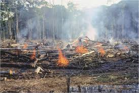
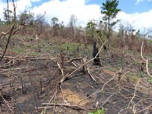

It is assumed that deforestation in Madagascar is ongoing in this day. It is observed that 80% of the forests or about has been cut or burnt. Even though, it is proved that it has been continuing with reasons. Consequently, the environment is polluted.
The determinants of deforestation
It is konwn that most people in Madagascar are farmers. Besides,the population has been increasing. As result, there is no longer sufficent places where people can live. Additionally, the growth of the population as well has a big impact for farmers. They don't have enough agricultural land anymore. People have to sort these problems out. So, the only one way people could do is to slash and burn the forests in order to create pontential places for living and cultivation.

The consequences of deforestation
Deforestation has been affecting the environment. The matter of this issue is that the ozone layer is getting thinner and thinner. It also is one of the troubles to bring all the wild animalls and plants in distinct. As we know, plants are unable to run away from a situation of danger. Some of the animals also need forests for their lives. So when people deforest, they could easily disappear. One of the consequences of deforestation as well is that it increases the soil erosion. It also could disrupt the water cycle.
